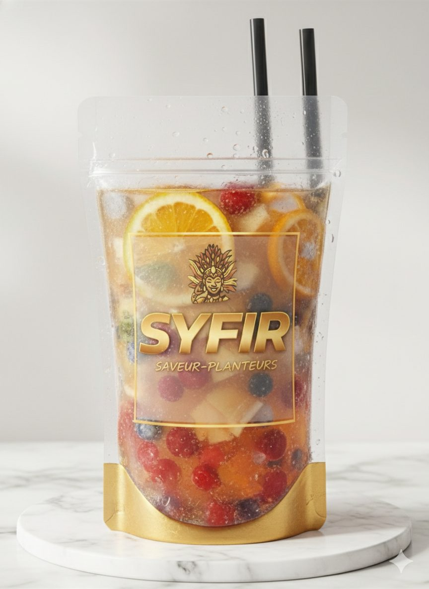
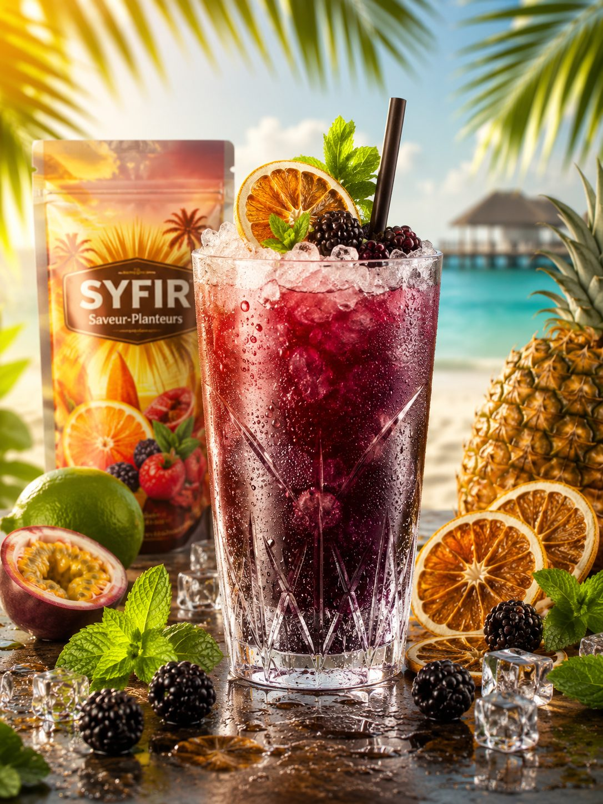
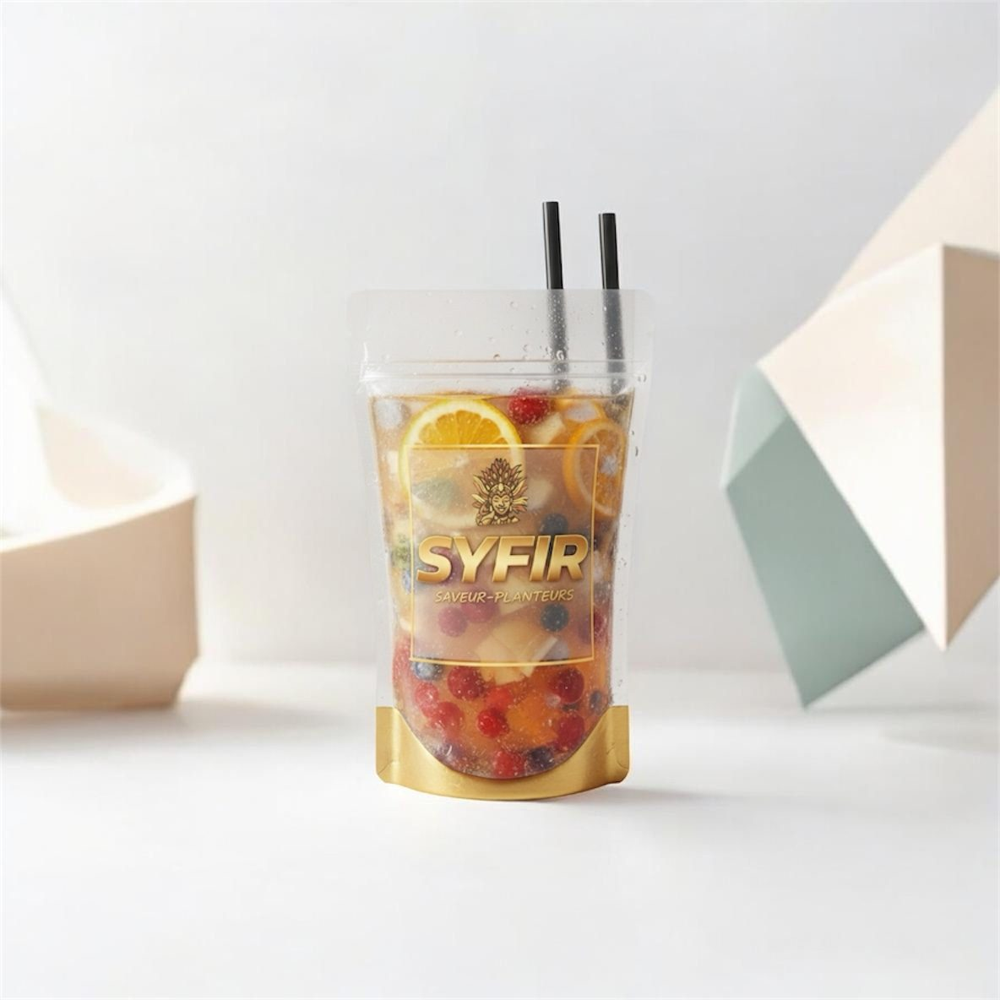
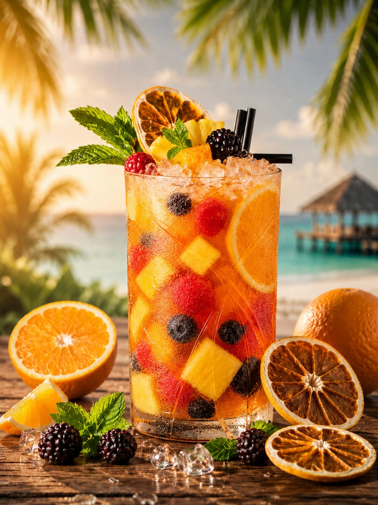
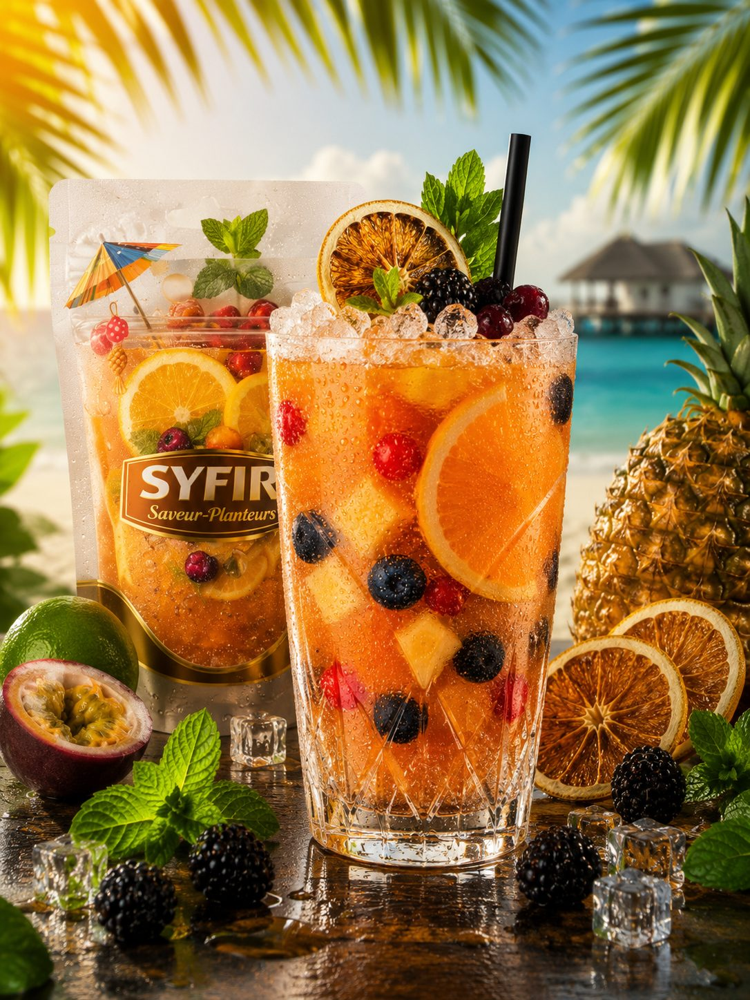

AVYR Planteur™
Mangue • Passion • Ananas
Mangue mûre, passion acidulée, ananas rôti — notre recette Planteur signature.
Où le trouver →La collection
Deux façons de les servir : sur place, servi au verre — ou à emporter, dans notre pochette signature scellée, refermable et transportable.

Mangue • Passion • Ananas
Mangue mûre, passion acidulée, ananas rôti — notre recette Planteur signature.
Où le trouver →
Agrumes • Hibiscus • Fruits rouges
Agrumes vifs, hibiscus, fruits rouges. Robe corail, attaque acidulée, finale fraîche.
Où le trouver →
Citron vert • Passion • Fruits exotiques
Citron vert, passion, fruits exotiques. Robe dorée, nez exotique, finale acidulée sur le citron vert.
Où le trouver →L'abus d'alcool est dangereux pour la santé. À consommer avec modération. Vente interdite aux mineurs.
« Le Cocktail Libre™ » — marque déposée de la collection AVYR.
Notre savoir-faire
Marier les meilleurs rhums, les fruits et les épices pour atteindre l'équilibre parfait, goutte après goutte.
C'est tout le geste AVYR : chercher la note juste, la refaire jusqu'à ce qu'elle sonne — puis la sceller dans la pochette.
Le même soin, de la première gorgée à la dernière.

Bientôt dans la collection
De nouvelles saveurs, des éditions limitées. On garde le secret encore un peu.
La collection grandit. Sois prévenu en premier. Préviens-moi ✦
L'histoire du Planteur
Mangue mûre, passion acidulée, ananas rôti — choisis pour le goût, pas pour la photo.
Format pochette : scellée à la main, refermable, transportable.

Servi au verre, ou tel quel à emporter — c'est toi qui choisis.

Deux heures au congélateur ou un bain de glace : elle se déguste bien fraîche, au verre ou tel quel.
Une pochette, un verre, sur glace — servie comme tu préfères.
L'art de la pochette
La même pochette, trois façons de la servir.
Deux heures au congélateur. Tu secoues, tu plantes la paille, tu sirotes.
Sur glace pilée, avec des fruits frais. La pochette passe au verre.
La base d'une création : un trait d'agrume, une feuille de menthe, selon la recette de chacun.
Bon à savoir
Une pochette, c'est un cocktail premium prêt à boire, scellée à la main, refermable et transportable. Elle se transporte facilement, se rafraîchit dans la glace et se déguste directement, sans verre ni préparation.
Au frais, à l'abri du soleil. Avant de la boire : deux heures au congélateur ou un bon bain de glace. Une fois ouverte, elle se déguste tout de suite — c'est fait pour. Retrouve nos rituels plus haut, dans L'art de la pochette.
Sur place, ton cocktail est servi au verre chez nos partenaires. À emporter, c'est la pochette scellée, refermable et transportable. Même recette, deux formats.